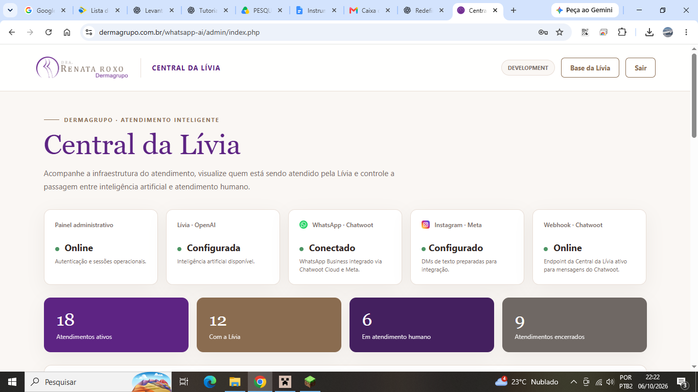
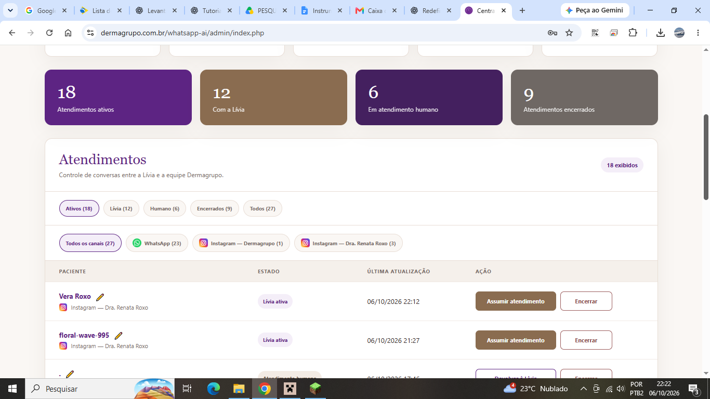
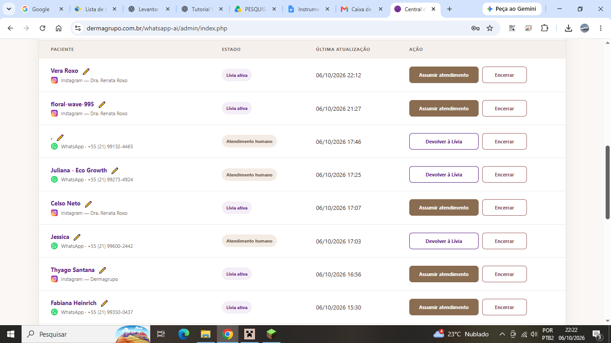
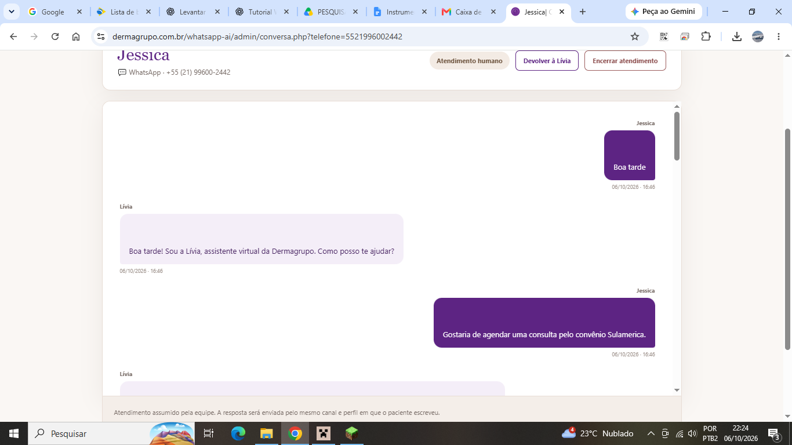
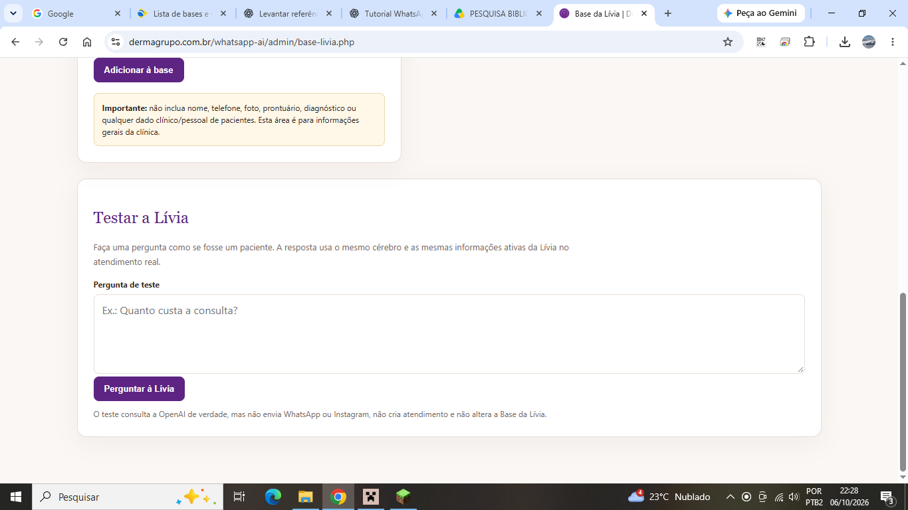
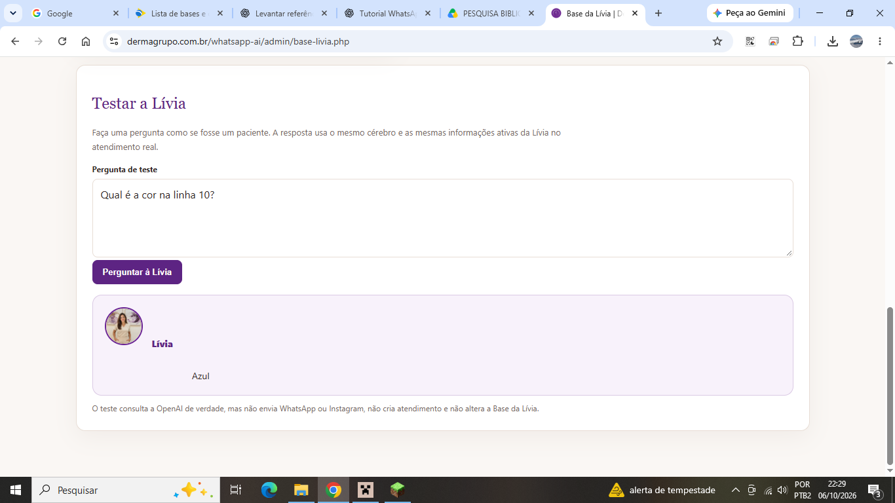

Central da Lívia
Uma central própria de atendimento inteligente desenvolvida para a Dermagrupo, integrando inteligência artificial, WhatsApp e múltiplos perfis do Instagram em uma única operação — com transferência entre IA e equipe humana.

Atendimento que não depende de cinco abas abertas.
A proposta foi concentrar a operação em uma interface própria: a Lívia atende automaticamente, a equipe acompanha as conversas e pode assumir ou devolver um atendimento à IA. A central também separa os canais e perfis de origem para preservar o contexto de cada conversa.
WhatsApp e Instagram reunidos na mesma central, mantendo a identificação do canal e do perfil receptor.
A equipe pode assumir uma conversa e posteriormente devolvê-la à Lívia, sem perder o histórico.
Informações operacionais podem ser atualizadas pela própria clínica sem editar código ou entrar no FTP.

Uma fila, vários canais
A central oferece filtros por estado do atendimento e por origem. WhatsApp, Instagram da Dermagrupo e Instagram da Dra. Renata permanecem identificados separadamente, inclusive quando a mesma pessoa conversa por canais diferentes.
Controle de quem responde
O painel mostra se a Lívia está ativa ou se o atendimento foi assumido pela equipe. A troca de responsabilidade acontece pela própria interface, evitando que IA e atendente disputem a mesma conversa.


Histórico legível para a equipe
Mensagens do paciente e da Lívia aparecem em uma interface de conversa própria. O histórico acompanha o atendimento e permite que a equipe entenda rapidamente o que já foi tratado antes de assumir.
Instagram dentro da mesma operação
Os perfis do Instagram são tratados como origens distintas e exibidos com identificação visual própria. Isso permite responder pelo mesmo perfil em que a mensagem chegou.


A clínica atualiza a IA sem tocar no código
A Base da Lívia permite cadastrar, editar, desativar e excluir informações operacionais. As regras fixas de segurança e conduta continuam protegidas no sistema.
Teste da base antes de usar no atendimento
A própria tela inclui um ambiente de teste que consulta a IA real sem enviar mensagens ao WhatsApp ou Instagram e sem criar atendimento. Assim, uma atualização pode ser conferida imediatamente.